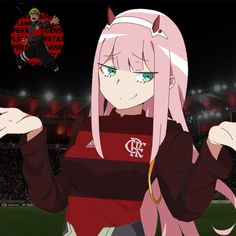

Anime flamengo |
|||
| Home | Sobre | Contato | Ajuda |
Personagems de animes com vestimenta do time do flamengo
Imagens de personagems de animes com camisas do flamengo andam aparecendo muito em perfils de redes sociais de adolecentes.Por que disso?
Os outros 30% dos entrevistados disseram que fazem isso para honrar sua religião chamada "Flamengistas4ever" Graças a um dos integrantes desse culto comseguimos a filosofia que mostraremos logo abaixo:
"Voce pensa que o flamengo é time
|
 |
||
|
|
|||
|
|
|||
| Copyright © PiupiuDonald | |||